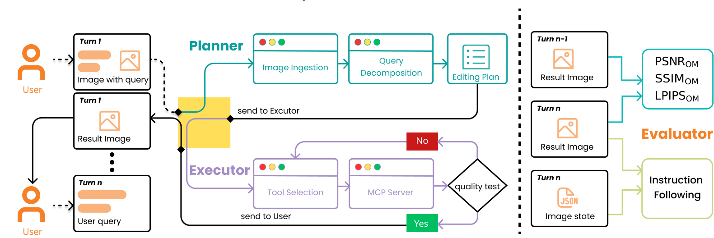
The system operates in a multi-turn loop (Left), comprising two core agents: a Planner that decomposes user queries into executable editing plans, and an Executor that selects tools via the MCP Server.
Crucially, the Executor incorporates a self-correction mechanism (Quality Test), reiterating the editing process if the quality check fails before presenting the result to the user.
(Right) Our Evaluator assesses performance by analyzing the transition between Turn n-1 and Turn n, utilizing instruction adherence checks and state tracking (JSON) to derive the final score.
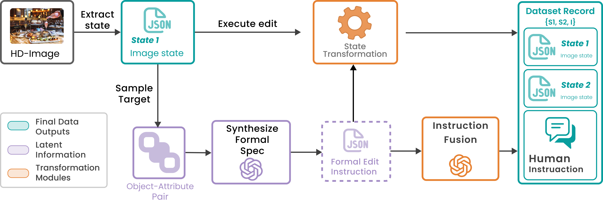
Scalable Data Pipeline for Multi-turn Editing.
This diagram illustrates the process of generating aligned (State, Instruction) pairs from HD images.

 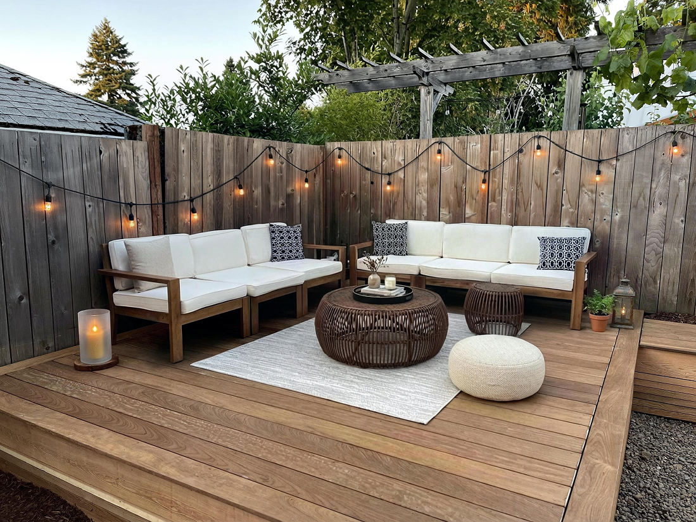
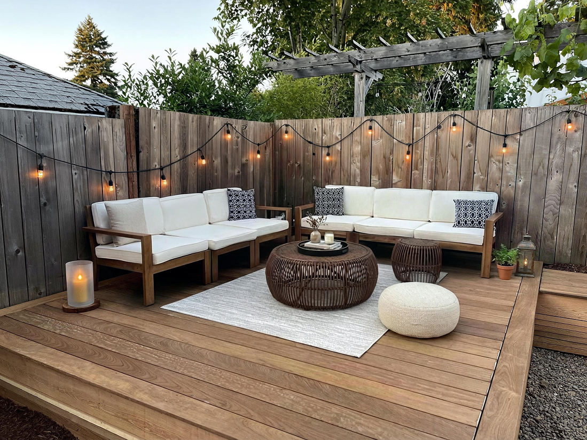
 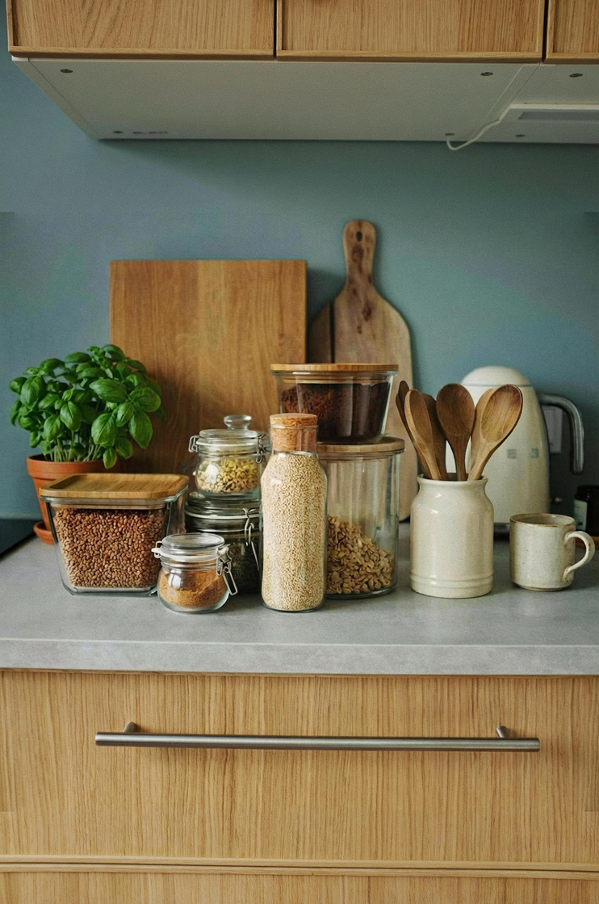
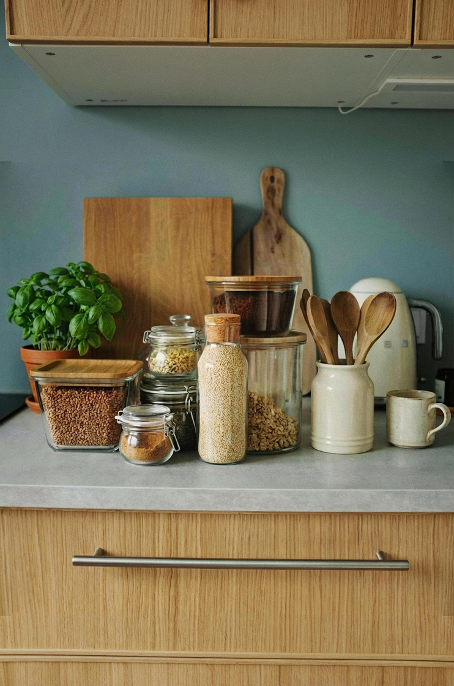
 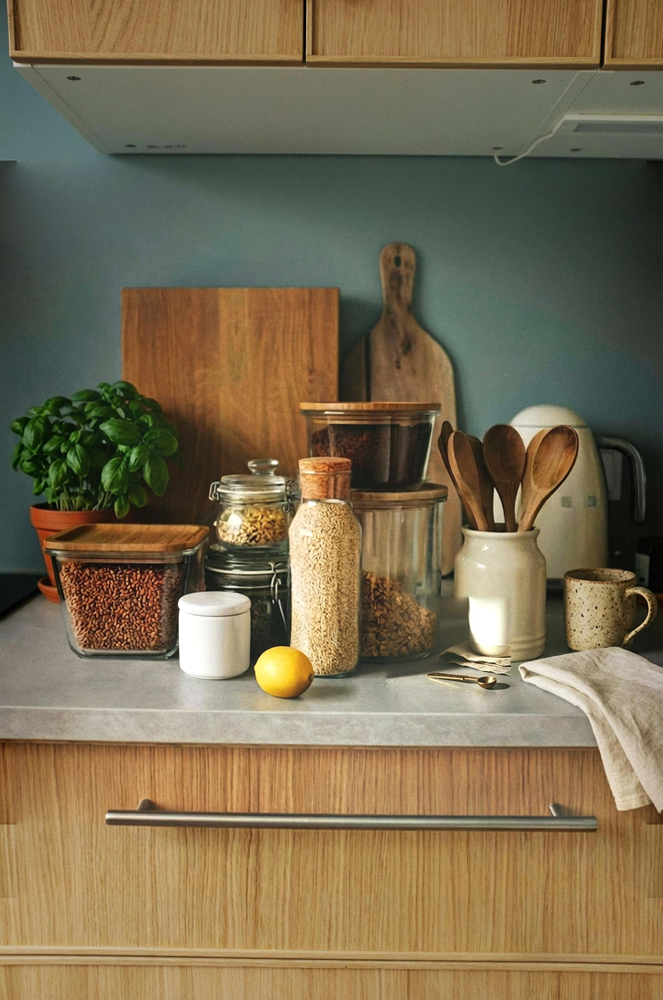
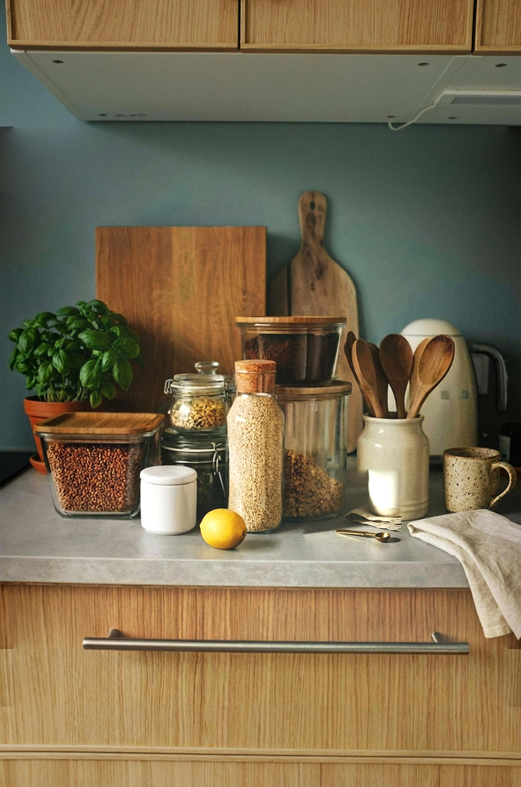
 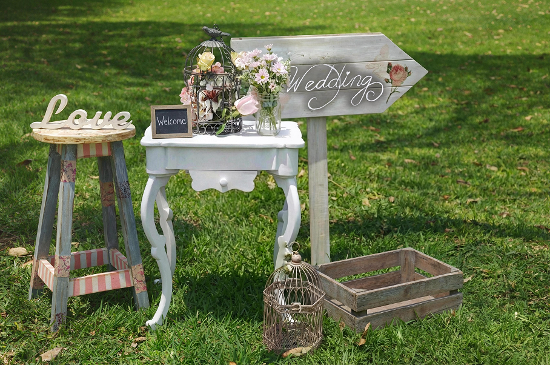
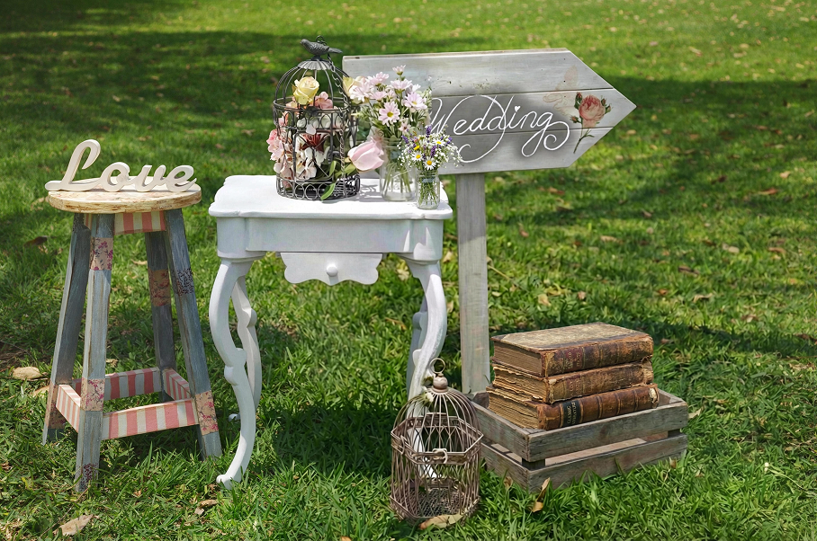
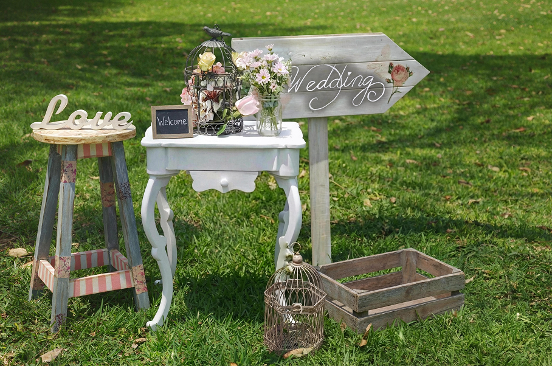
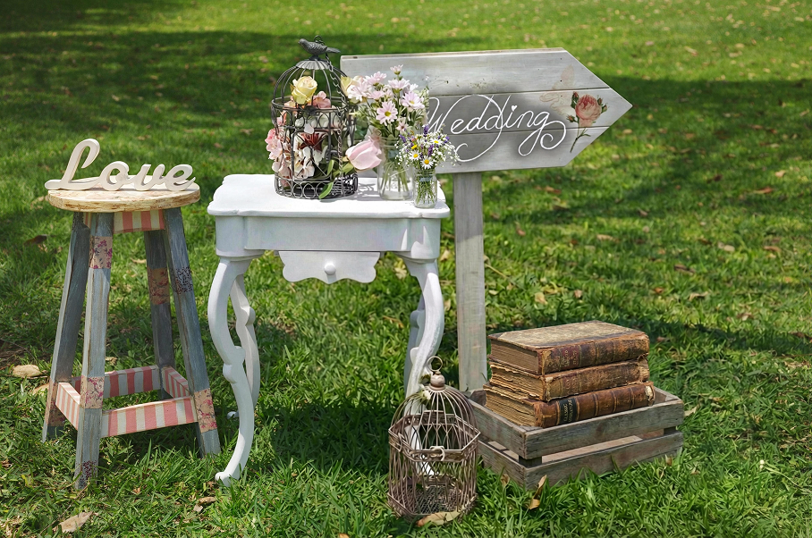